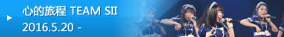
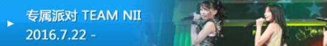
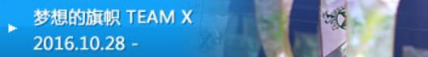
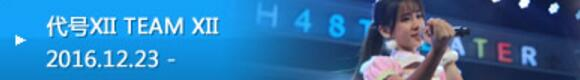
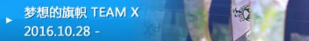
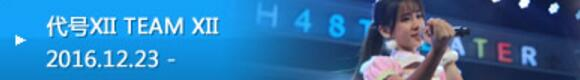
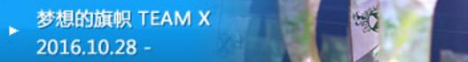
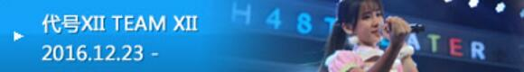
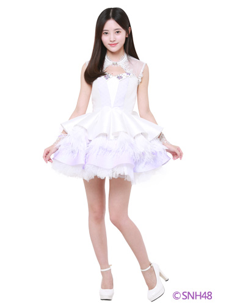
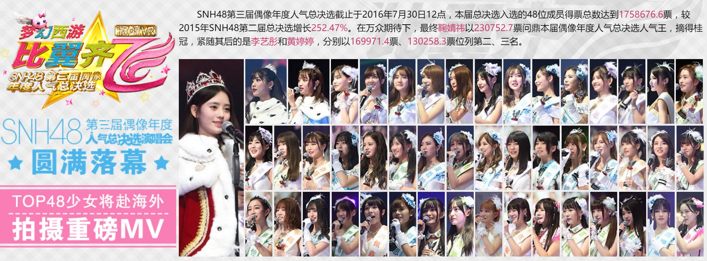

关于SNH48
SNH48是全球华语区规模最大的偶像团体，SNH48官方网站隶属于上海丝芭文化传媒集团有限公司，是唯一基于互联网思维和参与感精神、O2O构架和“可面对面偶像”运营理念的近距离养成式造星平台，其发展目标是在全球十四亿中国人中甄选优才，充分运用互联网和社交网络时代最具想象力，创新性和前瞻性的造星理念和技术手段，积极培育兼具音乐舞蹈和影视表演才艺的全方位偶像艺人，全力打造健康向上、充满青春活力、具备国际影响力的全球华语区第一女子偶像团体。
SNH48成立至今已有3年半，整个团体拥有超过100位的成员，分别组成5个队伍，分别为TEAM SII、TEAM NII、TEAM HII、TEAM X、TEAM XII。个性鲜明的成员造就了5个风格完全不同的队伍，在位于上海市虹口区嘉兴路267号的专属实体剧场 —— SNH48星梦剧院中演绎了一场又一场令人难忘的公演。
最新剧场公演


 





每日成员风采
鞠婧祎 Ju JingYi - TEAM NII
身高：159
血型：O
生日：06.18
星座：双子座
出生地：中国 四川
最终所属：SNH48 N队
经历备注：
2015.07.25 SNH48第二届总决选第二名
2016.07.30 SNH48第三届总决选第一名

2016年度总决选
